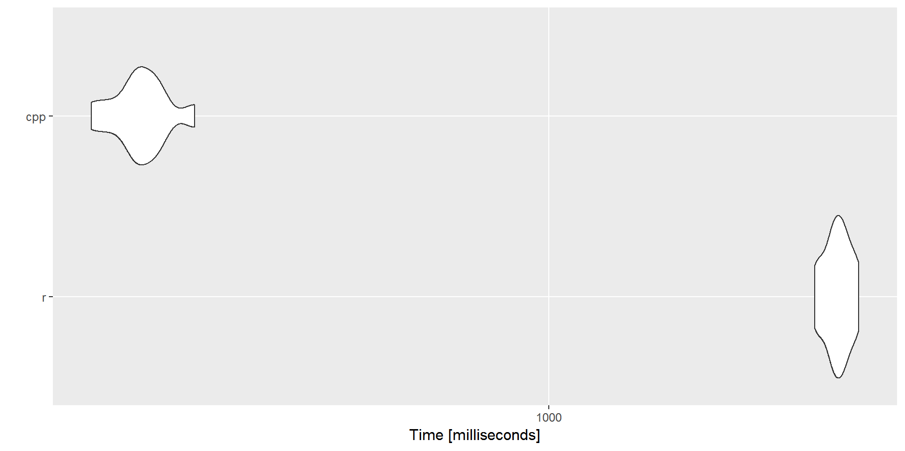

vignettes/risk-factors-to-score.Rmd
risk-factors-to-score.RmdFor the best result printing, let’t library(tibble) or dplyr.
library(pjutils)
#> Welcome to the package, developing by Wei Zhao, Pingjia Technology.
#> If you have any question, please email `zhaowei@chinaubi.com`.
library(tibble)The binary search have two version:
1, which if faster when the length(y) is large than 1e5.0, which if faster when length(y) is small than 1e5.# binary search
binary_search_r(1.3, 1:10)
#> [1] 2
binary_search_cpp(1.3, 1:10)
#> [1] 1
binary_search_r(9.9, 1:10)
#> [1] 10
binary_search_cpp(9.9, 1:10)
#> [1] 9
binary_search_r(0.9, 1:10)
#> [1] 1
binary_search_cpp(0.9, 1:10)
#> [1] 0
binary_search_r(10.9, 1:10)
#> [1] 11
binary_search_cpp(10.9, 1:10)
#> [1] 10The get_score apply to a sigle value while get_socre_vec can apply to a vector of vaues:
# get score
values <- c(55, 60, 65, 70, 75, 80, 85, 90, 95, 100)
scores <- c(
1.0000, 0.9747, 0.8967, 0.8303, 0.7730, 0.7232, 0.6793, 0.6405,
0.6059, 0.5748
)
get_score(55, values, scores)
#> [1] 1
get_score(57.5, values, scores)
#> [1] 0.98735
get_score(97.5, values, scores)
#> [1] 0.59035
get_score(77, values, scores)
#> [1] 0.75308
get_score(100, values, scores)
#> [1] 0.5748
get_score(101, values, scores)
#> [1] 0
get_score_vec(c(55, 57.5, 97.5, 77, 100, 101), values, scores)
#> [1] 1.00000 0.98735 0.59035 0.75308 0.57480 0.00000set.seed(12345)
aa <- runif(100000, 1, 1000)
bb <- microbenchmark::microbenchmark(
r = lapply(aa, binary_search_r, y = 1:1000),
cpp = lapply(aa, binary_search_cpp, y = 1000),
times = 10L
)
bb
microbenchmark::autoplot.microbenchmark(bb)
library(dplyr)
tmp <- tibble(
acc_count_phk = 5.281214,
act_radius = 513765.4,
day_mileage = 12345,
dec_count_phk = 3.492416,
high_curv_tr = 0.06097561,
holiday_tr = 0.07058824,
interstate_r = 0,
lane_change_phk = 2.108227,
late_night_tr = 0.01764706,
long_tr = 0.002941176,
main_act_prov = "江苏省",
mileage = 14077.86,
speeding_lvl = 0,
speeding_phk = 24.97929,
trip_dis_e = 3.359256,
turn_count_phk = 3.300759,
user_id = 2069
)
tmp
# read config file
score_config_list <- readRDS("path/to/score_config_list.RDS")
rf_weight <- readRDS("path/to/rf_weight.RDS")
discount_index <- readRDS("path/to/dicount_index.RDS")
risk_names <- c(
"mileage", "speeding_phk", "speeding_lvl", "acc_count_phk",
"dec_count_phk", "turn_count_phk", "lane_change_phk", "long_tr",
"late_night_tr", "holiday_tr", "high_curv_tr", "trip_dis_e",
"act_radius", "interstate_r", "main_act_prov"
)
tmp %>%
# drop out other cols
select(-user_id, -day_mileage) %>%
# get every risk factor specified score
rf2score(score_config_list = score_config_list) %>%
# sum all risk factors socre by weight
sum_rf_score(rf_weight) %>%
.$score %>%
# get score specified discount coef
get_score_vec(discount_index$score, discount_index$coef)
#> [1] "done: acc_count_phk"
#> [1] "done: act_radius"
#> [1] "done: dec_count_phk"
#> [1] "done: high_curv_tr"
#> [1] "done: holiday_tr"
#> [1] "done: interstate_r"
#> [1] "done: lane_change_phk"
#> [1] "done: late_night_tr"
#> [1] "done: long_tr"
#> [1] "done: main_act_prov"
#> [1] "done: mileage"
#> [1] "done: speeding_lvl"
#> [1] "done: speeding_phk"
#> [1] "done: trip_dis_e"
#> [1] "done: turn_count_phk"
#> [1] 0.8563817# all in one
result <- cal_user_coef(tmp, risk_names, score_config_list, rf_weight, discount_index)
#> [1] "done: mileage"
#> [1] "done: speeding_phk"
#> [1] "done: speeding_lvl"
#> [1] "done: acc_count_phk"
#> [1] "done: dec_count_phk"
#> [1] "done: turn_count_phk"
#> [1] "done: lane_change_phk"
#> [1] "done: long_tr"
#> [1] "done: late_night_tr"
#> [1] "done: holiday_tr"
#> [1] "done: high_curv_tr"
#> [1] "done: trip_dis_e"
#> [1] "done: act_radius"
#> [1] "done: interstate_r"
#> [1] "done: main_act_prov"
knitr::kable(result)| score | day_mileage | discount_coef | discount | delta |
|---|---|---|---|---|
| 68.04 | 12345 | 0.8563 | 0.1437 | 0 |